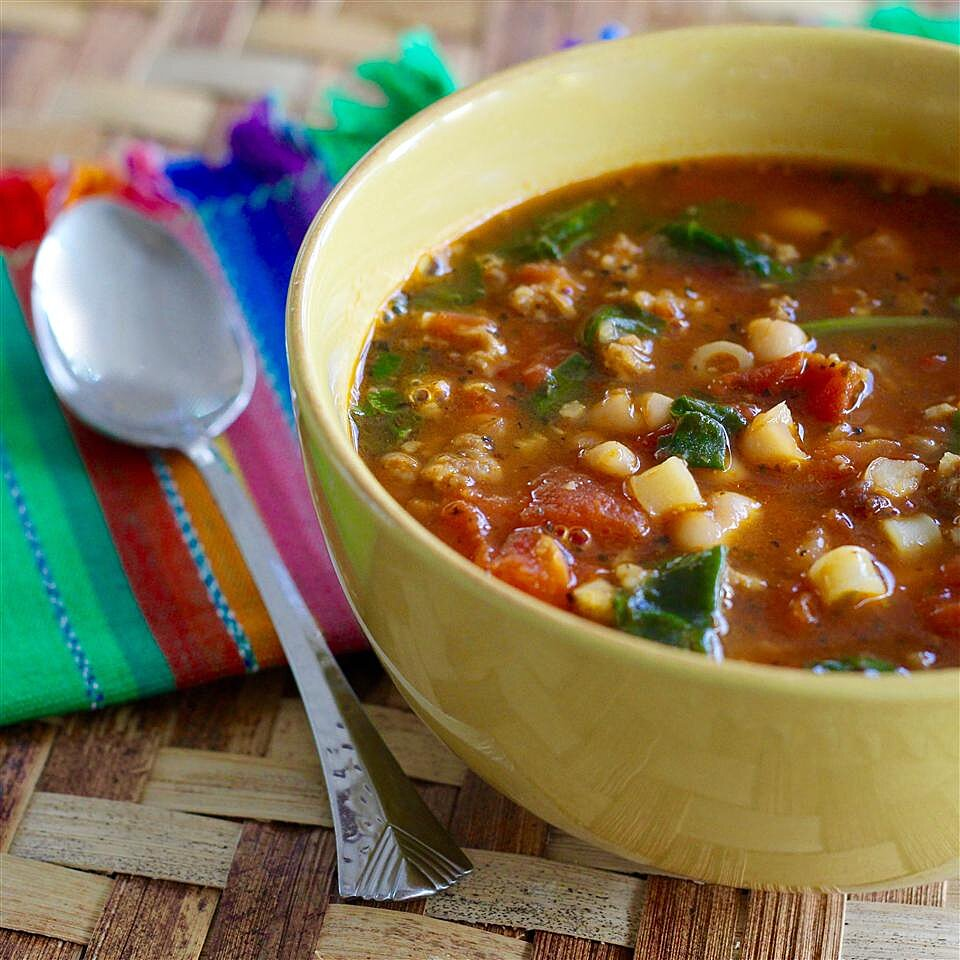

Pasta Bean Soup Recipe

Description
A quick and easy soup for a snowy day. Most of the ingredients are in your pantry. Sprinkle each serving with Parmesan cheese and serve with a hearty bread.
Serves 12
Ingredients
- 1 ½ teaspoons extra-virgin olive oil
- 1 pound bulk sausage
- 2 teaspoons minced garlic
- 2 (14.5 ounce) cans fire-roasted diced tomatoes
- 1 (15.5 ounce) can navy beans, drained
- 3 ½ cups beef stock
- 3 ½ cups chicken stock
- 1 teaspoon dried basil
- 1 teaspoon dried oregano
- 1 pinch red pepper flakes, or more to taste
- 1 ½ cups frozen chopped spinach
- 1 cup ditalini pasta
Steps
- Heat olive oil in a stock pot over medium-high heat; cook and stir sausage and garlic in the hot oil until sausage is crumbly and evenly browned, about 10 minutes. Drain and discard any excess grease.
- Mix tomatoes, navy beans, beef stock, chicken stock, basil, oregano, and red pepper flakes into sausage mixture; bring to a boil. Add spinach and ditalini pasta and simmer until pasta is tender but firm to the bite, about 10 minutes.
Chef's Note
The leftovers taste even better! Cool to room temperature and freeze it up to 1 week.